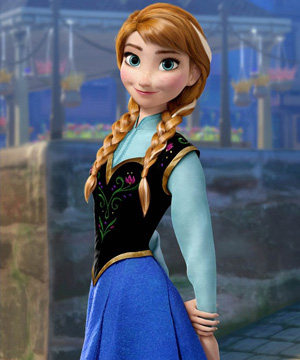
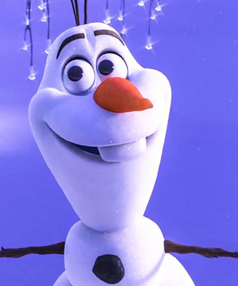
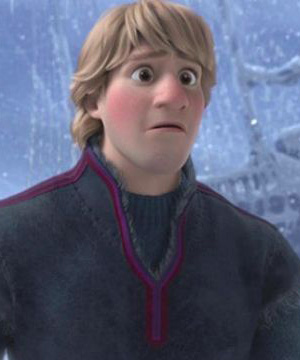
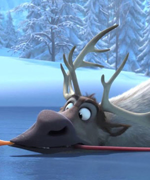
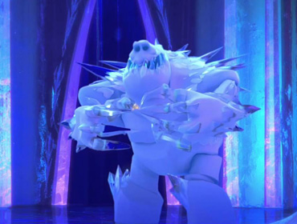
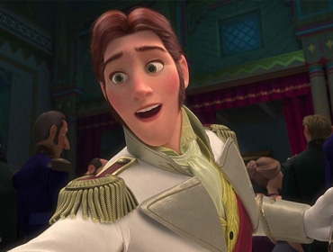
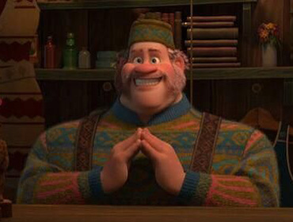

She lives in fear as she wrestles with a mighty secret—she was born with the power to create ice and snow. It’s a beautiful ability, but also extremely dangerous. Haunted by the moment her magic nearly killed her younger sister Anna, Elsa has isolated herself, spending every waking minute trying to suppress her growing powers. Her mounting emotions trigger the magic, accidentally setting off an eternal winter that she can’t stop. She fears she’s becoming a monster and that no one, not even her sister, can help her.

Anna
She longs to reconnect with her sister, Elsa, as they were close during their childhood. When Elsa accidentally unleashes a magical secret that locks the kingdom of Arendelle in an eternal winter, Anna embarks on a dangerous adventure to make things right. Armed with only her fearlessness, a never-give-up attitude and her faith in others, Anna is determined to save both her kingdom and her family.

Olaf
Sprung from Elsa’s magical powers, Olaf is by far the friendliest snowman to walk the mountains above Arendelle. His innocence, outgoing personality and uncanny ability to disassemble himself at good and not-so-good times lead to some awkward, albeit laughable moments. He may also have the world’s most impossible dream, but what he doesn’t know won’t melt him—or will it?

Kristoff
Kristoff is a true outdoorsman. He lives high up in the mountains where he harvests ice and sells it to the kingdom of Arendelle. Rough around the edges, Kristoff’s the strong, no-nonsense type, who follows his own set of rules. He may seem like a loner, but he always has his best friend by his side—a loyal and extremely mangy reindeer named Sven.

Sven
A reindeer with the heart of a Labrador, Sven is Kristoff’s loyal friend, sleigh-puller and conscience. He makes sure his mountain-man companion is the stand-up guy Sven knows and loves, and does so without saying a word. A few emphatic snorts usually get his point across. Life would be perfect if only Kristoff would lose that ridiculous reindeer voice he likes to use when speaking for Sven (as if reindeers really talk that way).
Sub Characters

Marshmallow
Marshmallow is an enormous icy snowman born from Elsa’s powers. He serves as a brute bodyguard charged with keeping intruders away from her ice palace. The menacing white beast doesn’t say much, but he packs a powerful punch.

Hans
Hans is a handsome royal from a neighboring kingdom who comes to Arendelle for Elsa’s coronation. Hans is smart, observant and chivalrous. Unlike Elsa, Hans promises he’ll never shut Anna out; he just might be the connection she’s been waiting for all these years.

Oaken
Oaken’s Trading Post and Sauna. But since Elsa’s massive winter storm hits in mid-July, he finds himself with a surplus of summer supplies. Deal-seekers beware: though he’s good-natured and helpful, if you cross him, Oaken won’t hesitate to throw you out of his humble establishment.